Note
Go to the end to download the full example code.
Using PyVista for Graphics in PyPrimeMesh#
Summary: This example demonstrates how to visualize all aspects of the
PyPrimeMesh data model with fine-grained control using PyVista, through the
PrimePlotter API and direct scene access.
The pipe tee junction model (a multi-part CAD assembly) is used to show nine visualization stages:
High-level plotting —
plotter.show(model)for quick visualizationPart-based coloring — each part in distinct color using
part_idgrouping from the polydata dict, withmake_distinct_colors()Zone name visualization — face and volume zones colored distinctly with bounding boxes, names, and a legend
Label visualization — CAD labels mapped to TopoFace IDs with bounding boxes, labels, and a legend
Edge type coloring — topology edges rendered with their native type-based colors (stored in the edge
"colors"array)Scope-based plotting —
ScopeDefinitionto selectively display only labeled inlet/outlet facesFace zonelet visualization — after extracting fluid region using wrapping and volume meshing showing face zonelets with distinct colors and ID annotations
Per-element face coloring — individual mesh face cells colored uniquely via
cell_datascalarsColorByType modes — reading and meshing structural parts to show colored by ZONE, ZONELET, and PART using direct
color_matrixindexing
Key data model concepts demonstrated:
Multi-part models: polydata dict is keyed by
part_id; each part contains its own faces, edges, control points, and spline surfacesDisplayMeshType filtering (
TOPOFACE,TOPOEDGE,FACEZONELET,EDGEZONELET) to distinguish entity typesDisplayMeshInfo metadata (
id,zone_name,zone_id,part_id,part_name,has_mesh,display_mesh_type) preserved throughinfo_actor_mapLabels vs Zones: labels are overlapping CAD metadata queried via
Part.get_labels(); zones are non-overlapping mesh groupings fromPart.get_face_zones()/Part.get_volume_zones()Edge type colors: edges carry type-based RGB data in their
"colors"array (red, black, cyan, magenta, yellow, purple by edge type)ColorByType:
get_scalar_colors()supports ZONE, ZONELET, and PART coloring modes; the built-inColorByTypeWidgetcycles between themPolydata access:
model.as_polydata()returns a dict keyed by part ID with"faces"(tuples ofMeshObjectPlot, DisplayMeshInfo),"edges"(MeshObjectPlot),"ctrlpts", and"splinesurf"listsPublic scene helpers:
plotter.add_mesh(),plotter.add_point_labels(),plotter.add_legend(),plotter.add_text()for full PyVista parameter access without reaching into private attributes;plotter.scenefor escape-hatch accessBuilt-in widgets:
PrimePlotterauto-registers four interactive widgets (ToggleEdges, ColorByType, PickedInfo, HidePicked) accessible via the checkbox buttons in the scene
# sphinx_gallery_thumbnail_number = 2
# sphinx_gallery_tags = ["Graphics"]
import colorsys
import numpy as np
import pyvista as pv
import ansys.meshing.prime as prime
from ansys.meshing.prime.core.mesh import DisplayMeshType
from ansys.meshing.prime.graphics.plotter import ColorByType, PrimePlotter, color_matrix
def make_distinct_colors(n):
"""Generate n maximally distinct colors using HSV spacing."""
colors = {}
for i in range(n):
hue = i / max(n, 1)
rgb = colorsys.hsv_to_rgb(hue, 0.85, 0.95)
colors[i] = list(rgb)
return colors
# Launch Prime server and initialize model
prime_client = prime.launch_prime()
model = prime_client.model
mesh_util = prime.lucid.Mesh(model)
# Load pipe tee CAD geometry
pipe_tee = prime.examples.download_pipe_tee_pmdat()
mesh_util.read(file_name=pipe_tee)
# For reference the model contains:
print(model)
Warning (Client): Modification of these configurations is not recommended.
Refer the documentation for your installed product for additional information.
/home/runner/work/pyprimemesh/pyprimemesh/.venv/lib/python3.14/site-packages/ansys/meshing/prime/internals/cyberchannel.py:183: UserWarning: Starting gRPC client without TLS on 127.0.0.1:40227. This is INSECURE. Consider using a secure connection.
warn(
Part Summary:
Part Name: solid_coupling_out
Part ID: 2
18 Topo Edges
12 Topo Faces
1 Topo Volumes
0 Edge Zones
Edge Zone Name(s) : []
0 Face Zones
Face Zone Name(s) : []
1 Volume Zones
Volume Zone Name(s) : [solid_coupling_out]
1 Label(s)
Names: [out]
Bounding box (-127 -360.99 -127)
(127 -184.15 127)
Part Name: solid_coupling_in1
Part ID: 3
18 Topo Edges
12 Topo Faces
1 Topo Volumes
0 Edge Zones
Edge Zone Name(s) : []
0 Face Zones
Face Zone Name(s) : []
1 Volume Zones
Volume Zone Name(s) : [solid_coupling_in1]
1 Label(s)
Names: [in1]
Bounding box (-127 184.15 -127)
(127 356.616 127)
Part Name: solid_tee
Part ID: 4
50 Topo Edges
31 Topo Faces
1 Topo Volumes
0 Edge Zones
Edge Zone Name(s) : []
0 Face Zones
Face Zone Name(s) : []
1 Volume Zones
Volume Zone Name(s) : [solid_tee]
0 Label(s)
Names: []
Bounding box (-127 -184.15 -127)
(127 184.15 203.2)
Part Name: solid_coupling_in2
Part ID: 5
18 Topo Edges
12 Topo Faces
1 Topo Volumes
0 Edge Zones
Edge Zone Name(s) : []
0 Face Zones
Face Zone Name(s) : []
1 Volume Zones
Volume Zone Name(s) : [solid_coupling_in2]
1 Label(s)
Names: [in2]
Bounding box (-95.25 -95.25 203.2)
(95.25 95.25 374.65)
Part Name: cap_out
Part ID: 6
1 Topo Edges
1 Topo Faces
0 Topo Volumes
0 Edge Zones
Edge Zone Name(s) : []
1 Face Zones
Face Zone Name(s) : [cap_out]
0 Volume Zones
Volume Zone Name(s) : []
1 Label(s)
Names: [outlet_main]
Bounding box (-76.2 -360.99 -76.2)
(76.2 -360.99 76.2)
Part Name: cap_in2
Part ID: 7
1 Topo Edges
1 Topo Faces
0 Topo Volumes
0 Edge Zones
Edge Zone Name(s) : []
1 Face Zones
Face Zone Name(s) : [cap_in2]
0 Volume Zones
Volume Zone Name(s) : []
1 Label(s)
Names: [in2_inlet]
Bounding box (-51.308 -51.308 374.65)
(51.308 51.308 374.65)
Part Name: cap_in1
Part ID: 8
1 Topo Edges
1 Topo Faces
0 Topo Volumes
0 Edge Zones
Edge Zone Name(s) : []
1 Face Zones
Face Zone Name(s) : [cap_in1]
0 Volume Zones
Volume Zone Name(s) : []
1 Label(s)
Names: [in1_inlet]
Bounding box (-76.2 356.616 -76.2)
(76.2 356.616 76.2)
Plot 1: High-level — plotter.show(model)#
The simplest way to visualize a model: one line of code. PrimePlotter.show() accepts a Model directly and plots all entities using the default color scheme (zone-based coloring with edge visibility determined by has_mesh).
plotter = PrimePlotter()
plotter.add_text(
"Plot 1 \u2014 High-Level: plotter.show(model)",
position="upper_left",
font_size=10,
color="black",
)
plotter.show(model, title="Plot 1 — High-Level: plotter.show(model)")
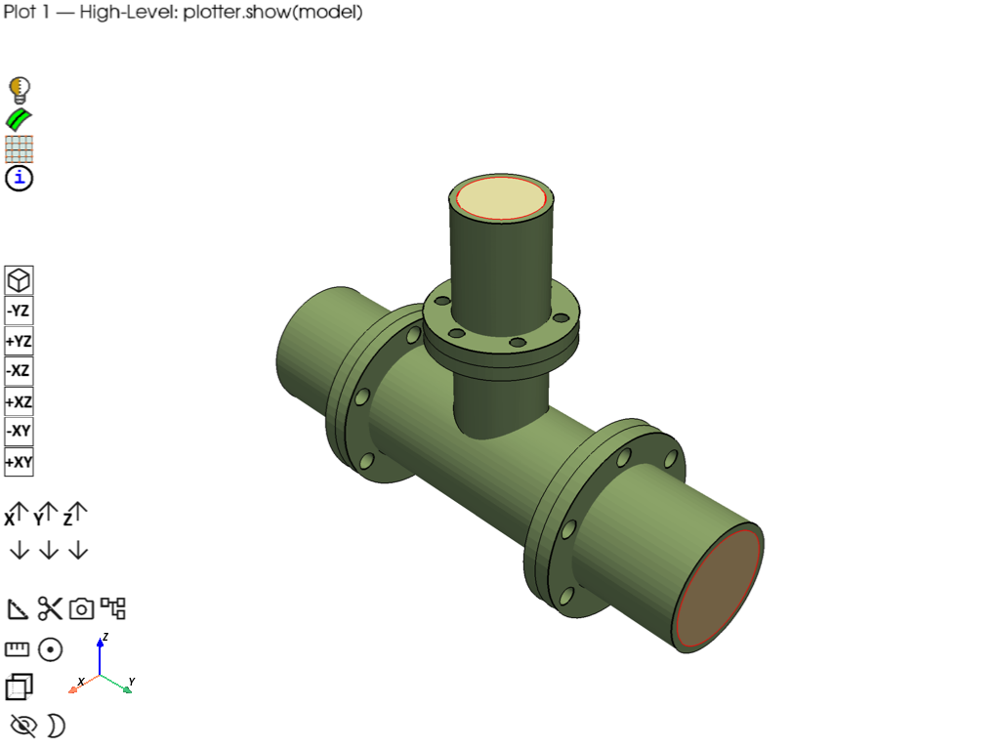
/home/runner/work/pyprimemesh/pyprimemesh/.venv/lib/python3.14/site-packages/ansys/meshing/prime/core/mesh.py:327: PyVistaDeprecationWarning: `n_faces_strict` is deprecated. Use `n_faces` instead, which now returns the number of polygonal faces.
colors = np.tile(fcolor, (surf.n_faces_strict, 1))
Plot 2: Part-based coloring (multi-part model)#
- Demonstrates:
Polydata dict is keyed by part_id — one entry per part
make_distinct_colors() for custom per-part coloring
Iterating parts to show part names and face/edge counts
plotter.add_mesh() for both MeshObjectPlot and raw mesh objects
plotter = PrimePlotter()
graphics_data = model.as_polydata()
# Print part structure
print("Model parts:")
for part in model.parts:
print(f" Part '{part.name}' (id={part.id})")
# Assign a distinct color per part
part_ids = sorted(graphics_data.keys())
part_color_map = make_distinct_colors(len(part_ids))
legend_entries = []
for idx, part_id in enumerate(part_ids):
part_data = graphics_data[part_id]
part_name = model.get_part(part_id).name
color = part_color_map[idx]
legend_entries.append([part_name, color])
# Add faces for this part
if "faces" in part_data:
for item in part_data["faces"]:
if item is None:
continue
polydata, metadata = item
plotter.add_mesh(polydata, metadata, color=color, opacity=1.0, show_edges=False)
# Add edges for this part with same part color
if "edges" in part_data:
for edge_obj in part_data["edges"]:
if edge_obj is None:
continue
plotter.add_mesh(edge_obj.mesh, color=color, line_width=2, pickable=False)
plotter.add_legend(legend_entries, bcolor="white", border=True, size=(0.2, 0.25))
plotter.add_text(
"Plot 2 \u2014 Part-Based Coloring",
position="upper_left",
font_size=10,
color="black",
)
plotter.show(title="Plot 2 — Part-Based Coloring")
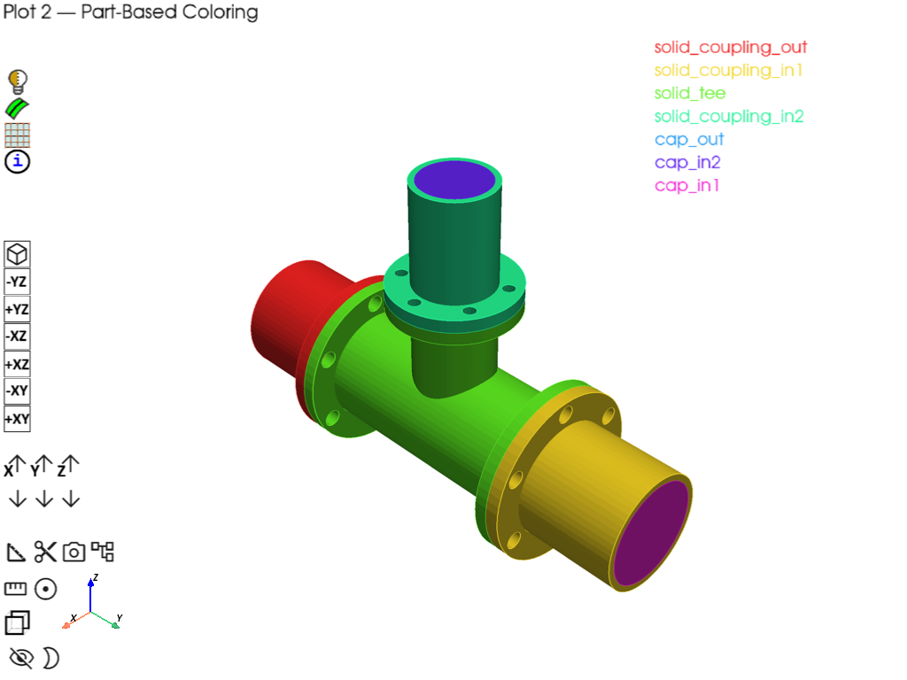
Model parts:
Part 'solid_coupling_out' (id=2)
Part 'solid_coupling_in1' (id=3)
Part 'solid_tee' (id=4)
Part 'solid_coupling_in2' (id=5)
Part 'cap_out' (id=6)
Part 'cap_in2' (id=7)
Part 'cap_in1' (id=8)
Plot 3: Zone name visualization (face zones + volume zones)#
- Demonstrates:
Querying face and volume zones via Part.get_face_zones() / get_volume_zones()
Mapping zone IDs to names via model.get_zone_name()
Custom coloring per zone with bounding boxes and point labels
Legend showing all zone names (volume zones annotated)
plotter = PrimePlotter()
graphics_data = model.as_polydata()
# Collect all zone names from parts, and build zone_id -> zone_name map
all_zone_names = set()
volume_zone_info = {}
face_zone_info = {}
zone_id_to_name = {}
for part in model.parts:
for fz_id in part.get_face_zones():
name = model.get_zone_name(fz_id)
if name:
all_zone_names.add(name)
face_zone_info[name] = fz_id
zone_id_to_name[fz_id] = name
for vz_id in part.get_volume_zones():
name = model.get_zone_name(vz_id)
if name:
all_zone_names.add(name)
volume_zone_info[name] = vz_id
zone_id_to_name[vz_id] = name
# Assign distinct colors
zone_list = sorted(all_zone_names)
zone_color_map = make_distinct_colors(max(len(zone_list), 1))
zone_colors = {name: zone_color_map[i] for i, name in enumerate(zone_list)}
# Add faces colored by zone; collect meshes for bounding boxes
zone_face_meshes = {}
for part_id, part_data in graphics_data.items():
for entity_type, entity_list in part_data.items():
if entity_type == "faces":
for item in entity_list:
if item is None:
continue
polydata, metadata = item
# Resolve zone name: prefer metadata.zone_name, then zone_id lookup
zname = metadata.zone_name
if not zname and metadata.zone_id:
zname = zone_id_to_name.get(metadata.zone_id)
if not zname:
# Auto-name for faces with no zone assignment
zname = f"zone_{metadata.zone_id}" if metadata.zone_id else metadata.part_name
if zname not in zone_colors:
hue = (len(zone_colors) * 0.618) % 1.0 # golden ratio spacing
rgb = colorsys.hsv_to_rgb(hue, 0.7, 0.9)
zone_colors[zname] = list(rgb)
zone_list.append(zname)
color = zone_colors.get(zname, [0.5, 0.5, 0.5])
zone_face_meshes.setdefault(zname, []).append(polydata.mesh)
plotter.add_mesh(polydata, metadata, color=color, opacity=1.0, show_edges=False)
elif entity_type == "edges":
for edge_obj in entity_list:
if edge_obj is None:
continue
plotter.add_mesh(edge_obj.mesh, color=[0.3, 0.3, 0.3], line_width=2, pickable=False)
# Add bounding boxes and labels for zones that have face geometry
for zname, meshes in zone_face_meshes.items():
combined = meshes[0] if len(meshes) == 1 else meshes[0].merge(meshes[1:])
bounds = combined.bounds
bbox = pv.Box(bounds)
color = zone_colors[zname]
plotter.add_mesh(bbox, color=color, style="wireframe", line_width=2, pickable=False)
center = [
(bounds[0] + bounds[1]) / 2,
(bounds[2] + bounds[3]) / 2,
bounds[5],
]
plotter.add_point_labels(
np.array([center]),
[zname],
font_size=16,
text_color=color,
bold=True,
shape=None,
render_points_as_spheres=False,
point_size=0,
)
# Legend with face and volume zones distinguished
legend_entries = []
for zname in zone_list:
if zname in volume_zone_info:
suffix = " (volume zone)"
elif zname in face_zone_info:
suffix = " (face zone)"
else:
suffix = ""
legend_entries.append([zname + suffix, zone_colors[zname]])
plotter.add_legend(legend_entries, bcolor="white", border=True, size=(0.2, 0.35))
plotter.add_text(
"Plot 3 \u2014 Zone Names (Face & Volume)",
position="upper_left",
font_size=10,
color="black",
)
plotter.show(title="Plot 3 \u2014 Zone Names (Face & Volume)")
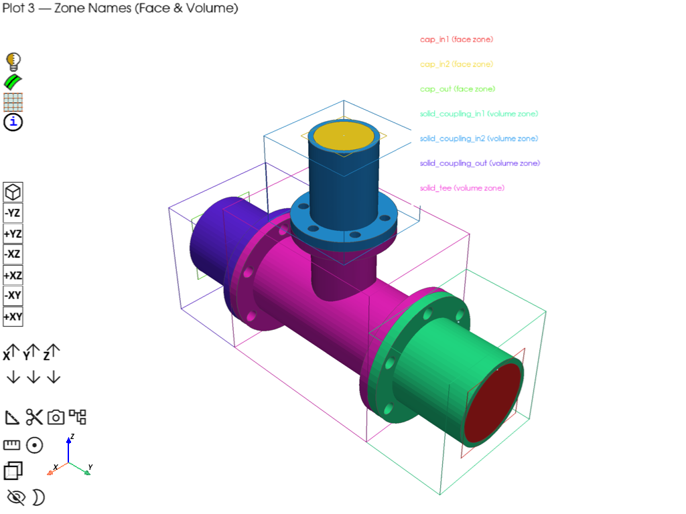
Plot 4: Label visualization (CAD labels → TopoFace IDs)#
- Demonstrates:
Querying labels via Part.get_labels()
Resolving label → TopoFace IDs via get_topo_faces_of_label_name_pattern()
Matching metadata.id to TopoFace IDs for coloring
Filtering by DisplayMeshType.TOPOFACE and TOPOEDGE
plotter = PrimePlotter()
graphics_data = model.as_polydata()
# Build label → TopoFace ID mapping
label_topoface_map = {}
for part in model.parts:
for label in part.get_labels():
topo_face_ids = part.get_topo_faces_of_label_name_pattern(
label, prime.NamePatternParams(model)
)
if topo_face_ids:
label_topoface_map.setdefault(label, set()).update(topo_face_ids)
# Reverse map: TopoFace ID → label
topoface_label_map = {}
for label, topo_ids in label_topoface_map.items():
for tid in topo_ids:
topoface_label_map.setdefault(tid, label)
# Assign distinct colors
label_list = sorted(label_topoface_map.keys())
label_color_map = make_distinct_colors(len(label_list))
label_colors = {name: label_color_map[i] for i, name in enumerate(label_list)}
# Add faces and edges, filtering by DisplayMeshType
label_face_meshes = {}
for part_id, part_data in graphics_data.items():
for entity_type, entity_list in part_data.items():
if entity_type == "faces":
for item in entity_list:
if item is None:
continue
polydata, metadata = item
# Use DisplayMeshType to confirm this is a topology face
if metadata.display_mesh_type == DisplayMeshType.TOPOFACE:
face_label = topoface_label_map.get(metadata.id)
if face_label and face_label in label_colors:
color = label_colors[face_label]
opacity = 1.0
label_face_meshes.setdefault(face_label, []).append(polydata.mesh)
else:
color = [0.5, 0.5, 0.5]
opacity = 0.3
plotter.add_mesh(
polydata, metadata, color=color, opacity=opacity, show_edges=False
)
elif entity_type == "edges":
for edge_obj in entity_list:
if edge_obj is None:
continue
plotter.add_mesh(edge_obj.mesh, color=[0.2, 0.2, 0.2], line_width=2, pickable=False)
# Bounding boxes and labels
for label_name, meshes in label_face_meshes.items():
combined = meshes[0] if len(meshes) == 1 else meshes[0].merge(meshes[1:])
bounds = combined.bounds
bbox = pv.Box(bounds)
color = label_colors[label_name]
plotter.add_mesh(bbox, color=color, style="wireframe", line_width=2, pickable=False)
center = [
(bounds[0] + bounds[1]) / 2,
(bounds[2] + bounds[3]) / 2,
bounds[5],
]
plotter.add_point_labels(
np.array([center]),
[label_name],
font_size=16,
text_color=color,
bold=True,
shape=None,
render_points_as_spheres=False,
point_size=0,
)
# Legend
legend_entries = [[name, label_colors[name]] for name in label_list]
legend_entries.append(["unlabeled", [0.5, 0.5, 0.5]])
plotter.add_legend(legend_entries, bcolor="white", border=True, size=(0.2, 0.3))
plotter.add_text(
"Plot 4 \u2014 CAD Labels on TopoFaces",
position="upper_left",
font_size=10,
color="black",
)
plotter.show(title="Plot 4 \u2014 CAD Labels on TopoFaces")
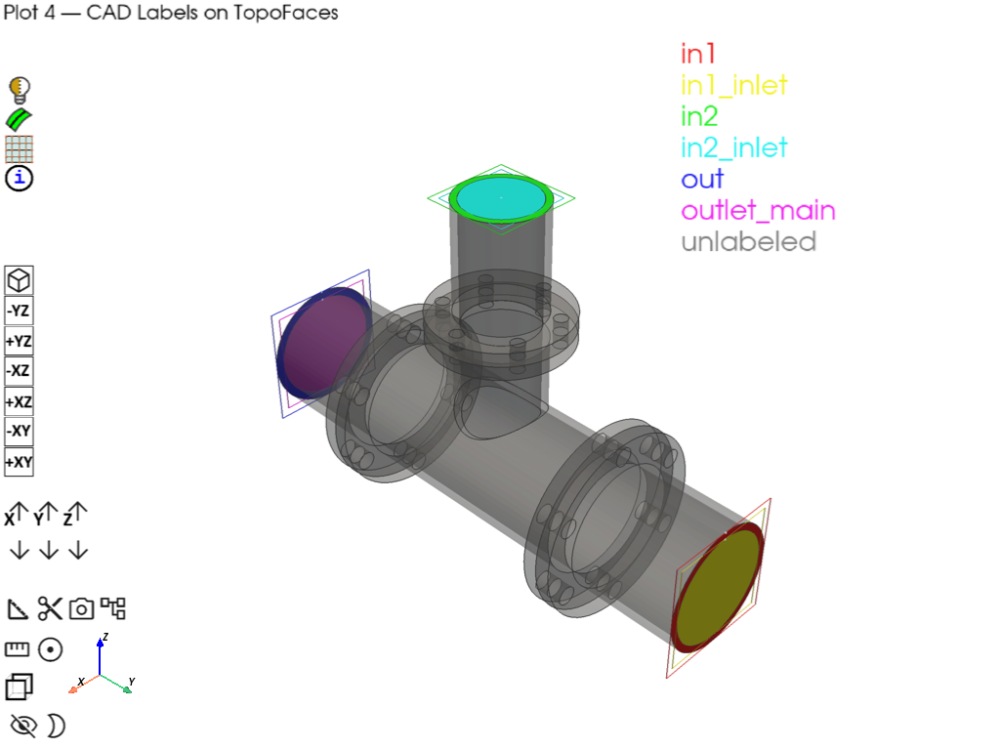
Plot 5: Edge type coloring#
- Demonstrates:
Edge MeshObjectPlot carries type-based RGB in mesh[“colors”] array
Native edge colors encode topology connectivity edge type (red, black, etc.)
Red: connected to a single face
Black: connected to two faces
Rendering edges with their built-in scalars via rgb=True
plotter = PrimePlotter()
graphics_data = model.as_polydata()
for part_id, part_data in graphics_data.items():
# Add faces as light transparent background
if "faces" in part_data:
for item in part_data["faces"]:
if item is None:
continue
polydata, metadata = item
plotter.add_mesh(
polydata, metadata, color=[0.85, 0.85, 0.85], opacity=0.3, show_edges=False
)
# Add edges with their native type-based colors
if "edges" in part_data:
for edge_obj in part_data["edges"]:
if edge_obj is None:
continue
plotter.add_mesh(
edge_obj.mesh,
scalars="colors",
rgb=True,
line_width=4,
pickable=False,
)
plotter.add_text(
"Plot 5 \u2014 Edge Type Coloring (native RGB, Red=1, Black=2)",
position="upper_left",
font_size=10,
color="black",
)
plotter.show(title="Plot 5 \u2014 Edge Type Coloring")
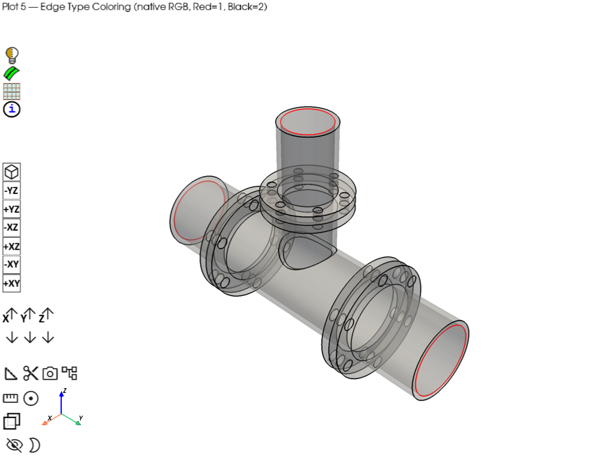
Plot 6: Scope-based plotting#
- Demonstrates:
ScopeDefinition with label_expression to select specific entities
plotter.plot(model, scope=scope) for selective display
Combining scoped plots with different visual styles
plotter = PrimePlotter()
# Show only inlet and outlet faces using label-based scoping
scope_inlets = prime.ScopeDefinition(model, label_expression="in1_inlet,in2_inlet,outlet_main")
plotter.plot(model, scope=scope_inlets)
plotter.add_text(
"Plot 6 \u2014 Scope-Based: Inlet & Outlet Faces Only",
position="upper_left",
font_size=10,
color="black",
)
plotter.show(title="Plot 6 \u2014 Scope-Based: Inlet & Outlet Faces Only")
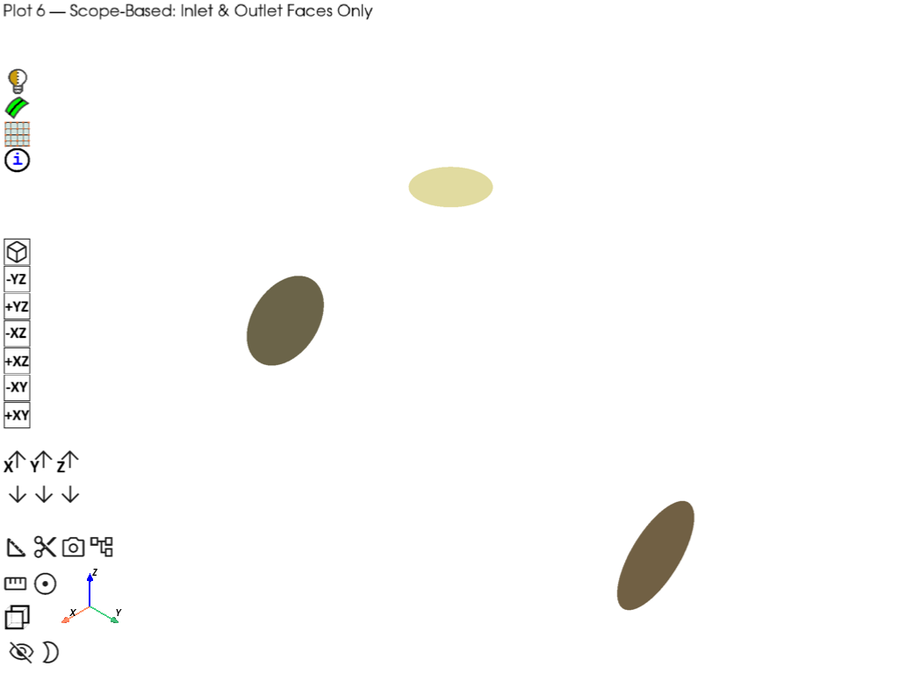
Meshing — wrap, surface mesh, volume mesh#
mesh_util.wrap(min_size=6, region_extract=prime.WrapRegion.LARGESTINTERNAL)
model.set_global_sizing_params(prime.GlobalSizingParams(model, min=6, max=50))
mesh_util.create_zones_from_labels("outlet_main,in1_inlet,in2_inlet")
mesh_util.surface_mesh(min_size=5, max_size=20)
mesh_util.volume_mesh(
prism_layers=5,
prism_surface_expression="* !*inlet* !*outlet*",
volume_fill_type=prime.VolumeFillType.POLY,
)
# For reference after meshing the model contains:
print(model)
Part Summary:
Part Name: __wrap__
Part ID: 9
1 Edge Zonelets
8 Face Zonelets
1 Cell Zonelets
0 Edge Zones
Edge Zone Name(s) : []
6 Face Zones
Face Zone Name(s) : [cap_out, cap_in2, cap_in1, in1_inlet, in2_inlet, outlet_main]
1 Volume Zones
Volume Zone Name(s) : [unreferenced]
13 Label(s)
Names: [___geom_features___, __extracted__features__, cap_in1, cap_in2, cap_out, in1_inlet, in2_inlet, outlet_main, solid_coupling_in1, solid_coupling_in2, solid_coupling_out, solid_tee, unreferenced]
Bounding box (-127 -360.99 -126.959)
(126.934 356.616 374.65)
Plot 7: Face zonelet visualization (post-meshing)#
- Demonstrates:
update=True on as_polydata() to refresh after meshing
Filtering by DisplayMeshType.FACEZONELET and has_mesh=True
Distinct color per face zonelet with ID annotations
plotter.add_point_labels() for face zonelet IDs
plotter = PrimePlotter()
volume_graphics_data = model.as_polydata(update=True)
# Collect meshed face zonelets
zonelet_items = []
for part_id, part_data in volume_graphics_data.items():
for entity_type, entity_list in part_data.items():
if entity_type == "faces":
for item in entity_list:
if item is None:
continue
polydata, metadata = item
if metadata.has_mesh and metadata.display_mesh_type == DisplayMeshType.FACEZONELET:
zonelet_items.append((polydata, metadata))
# Assign distinct colors and add ID labels
zonelet_color_map = make_distinct_colors(len(zonelet_items))
for i, (polydata, metadata) in enumerate(zonelet_items):
color = zonelet_color_map[i]
plotter.add_mesh(
polydata,
metadata,
color=color,
opacity=1.0,
show_edges=True,
line_width=0.5,
)
# Annotate each face zonelet with its ID at the mesh center
center = np.array(polydata.mesh.center)
plotter.add_point_labels(
np.array([center]),
[str(metadata.id)],
font_size=12,
text_color="black",
bold=True,
shape=None,
render_points_as_spheres=False,
point_size=0,
)
plotter.add_text(
"Plot 7 \u2014 Face Zonelets with IDs",
position="upper_left",
font_size=10,
color="black",
)
plotter.show(title="Plot 7 \u2014 Face Zonelets with IDs")
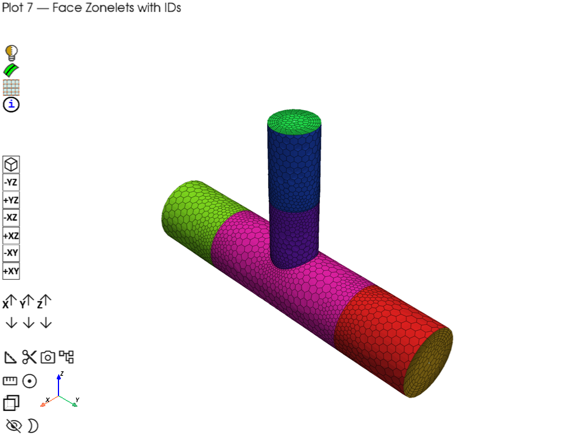
/home/runner/work/pyprimemesh/pyprimemesh/.venv/lib/python3.14/site-packages/ansys/meshing/prime/core/mesh.py:327: PyVistaDeprecationWarning: `n_faces_strict` is deprecated. Use `n_faces` instead, which now returns the number of polygonal faces.
colors = np.tile(fcolor, (surf.n_faces_strict, 1))
Plot 8: Per-element face coloring#
- Demonstrates:
Assigning per-cell RGB scalars via cell_data on a copy of the mesh
plotter.add_mesh() with scalars=’RGB’, rgb=True, and metadata
Metadata automatically registered in info_actor_map
plotter = PrimePlotter()
rng = np.random.default_rng(seed=42)
for part_id, part_data in volume_graphics_data.items():
for entity_type, entity_list in part_data.items():
if entity_type == "faces":
for item in entity_list:
if item is None:
continue
polydata, metadata = item
if metadata.has_mesh:
# Copy to avoid mutating cached polydata
mesh_copy = polydata.mesh.copy()
n_cells = mesh_copy.n_cells
if n_cells > 0:
cell_colors = rng.integers(0, 256, size=(n_cells, 3), dtype=np.uint8)
mesh_copy.cell_data["RGB"] = cell_colors
plotter.add_mesh(
mesh_copy,
metadata,
scalars="RGB",
rgb=True,
show_edges=True,
line_width=0.5,
pickable=True,
)
plotter.add_text(
"Plot 8 \u2014 Per-Element Face Colors",
position="upper_left",
font_size=10,
color="black",
)
plotter.show(title="Plot 8 \u2014 Per-Element Face Colors")
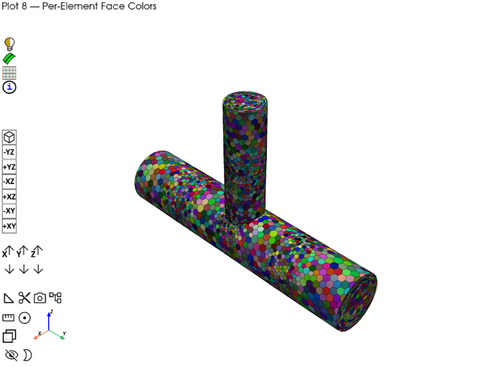
Plot 9: ColorByType MODES (ZONE / ZONELET / PART)#
- Demonstrates:
ColorByType enum (ZONE, ZONELET, PART) for different coloring strategies
Same mesh data rendered three ways using the color_matrix palette
This is the logic used by the built-in ColorByType widget
# Load pipe tee CAD geometry and mesh as separate parts to show color by type
pipe_tee = prime.examples.download_pipe_tee_pmdat()
mesh_util.read(file_name=pipe_tee)
mesh_util.surface_mesh(min_size=5, max_size=25)
mesh_util.volume_mesh()
# getting updated data for the new mesh
volume_graphics_data = model.as_polydata(update=True)
# For reference after the structural parts are meshed the model contains:
print(model)
num_colors = int(color_matrix.size / 3)
for color_mode in [ColorByType.ZONE, ColorByType.ZONELET, ColorByType.PART]:
plotter = PrimePlotter()
for part_id, part_data in volume_graphics_data.items():
for entity_type, entity_list in part_data.items():
if entity_type == "faces":
for item in entity_list:
if item is None:
continue
polydata, metadata = item
if metadata.has_mesh:
# Apply ColorByType logic (same as ColorByTypeWidget)
if color_mode == ColorByType.ZONELET:
color = color_matrix[metadata.id % num_colors].tolist()
elif color_mode == ColorByType.PART:
color = color_matrix[metadata.part_id % num_colors].tolist()
else: # ZONE
color = color_matrix[metadata.zone_id % num_colors].tolist()
plotter.add_mesh(
polydata, metadata, color=color, opacity=1.0, show_edges=True
)
mode_name = color_mode.name
plotter.add_text(
f"Plot 9 \u2014 ColorByType.{mode_name}",
position="upper_left",
font_size=10,
color="black",
)
plotter.show(title=f"Plot 9 \u2014 ColorByType.{mode_name}")
prime_client.exit()
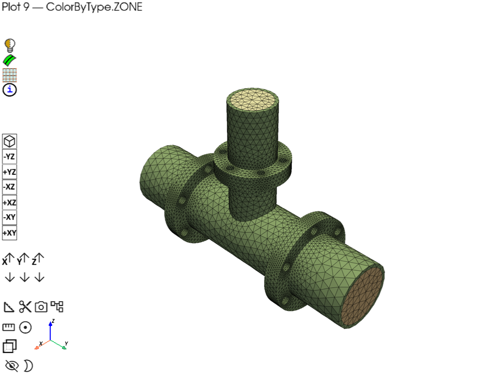
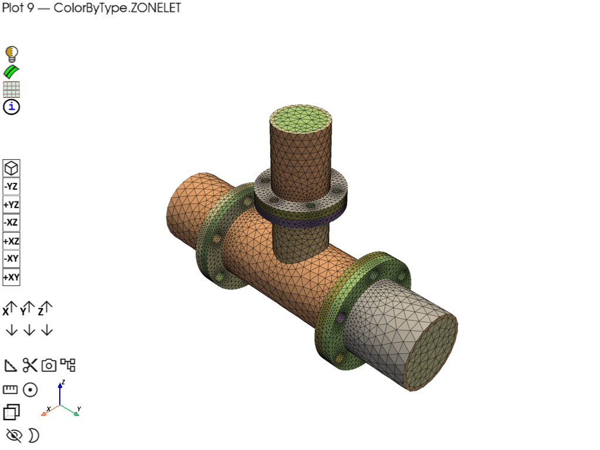
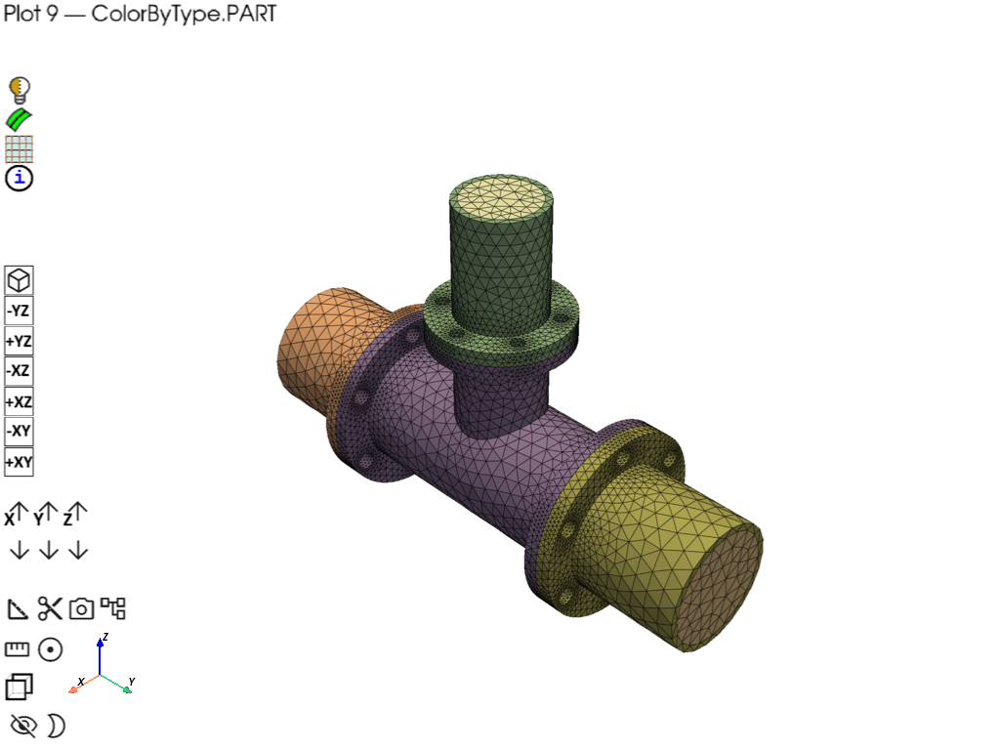
Part Summary:
Part Name: solid_coupling_out
Part ID: 2
18 Topo Edges
12 Topo Faces
1 Topo Volumes
0 Edge Zones
Edge Zone Name(s) : []
0 Face Zones
Face Zone Name(s) : []
1 Volume Zones
Volume Zone Name(s) : [solid_coupling_out]
1 Label(s)
Names: [out]
Bounding box (-127 -360.99 -127)
(127 -184.15 127)
Part Name: solid_coupling_in1
Part ID: 3
18 Topo Edges
12 Topo Faces
1 Topo Volumes
0 Edge Zones
Edge Zone Name(s) : []
0 Face Zones
Face Zone Name(s) : []
1 Volume Zones
Volume Zone Name(s) : [solid_coupling_in1]
1 Label(s)
Names: [in1]
Bounding box (-127 184.15 -127)
(127 356.616 127)
Part Name: solid_tee
Part ID: 4
50 Topo Edges
31 Topo Faces
1 Topo Volumes
0 Edge Zones
Edge Zone Name(s) : []
0 Face Zones
Face Zone Name(s) : []
1 Volume Zones
Volume Zone Name(s) : [solid_tee]
0 Label(s)
Names: []
Bounding box (-127 -184.15 -127)
(127 184.15 203.2)
Part Name: solid_coupling_in2
Part ID: 5
18 Topo Edges
12 Topo Faces
1 Topo Volumes
0 Edge Zones
Edge Zone Name(s) : []
0 Face Zones
Face Zone Name(s) : []
1 Volume Zones
Volume Zone Name(s) : [solid_coupling_in2]
1 Label(s)
Names: [in2]
Bounding box (-95.25 -95.25 203.2)
(95.25 95.25 374.65)
Part Name: cap_out
Part ID: 6
1 Topo Edges
1 Topo Faces
0 Topo Volumes
0 Edge Zones
Edge Zone Name(s) : []
1 Face Zones
Face Zone Name(s) : [cap_out]
0 Volume Zones
Volume Zone Name(s) : []
1 Label(s)
Names: [outlet_main]
Bounding box (-76.2 -360.99 -76.2)
(76.2 -360.99 76.2)
Part Name: cap_in2
Part ID: 7
1 Topo Edges
1 Topo Faces
0 Topo Volumes
0 Edge Zones
Edge Zone Name(s) : []
1 Face Zones
Face Zone Name(s) : [cap_in2]
0 Volume Zones
Volume Zone Name(s) : []
1 Label(s)
Names: [in2_inlet]
Bounding box (-51.308 -51.308 374.65)
(51.308 51.308 374.65)
Part Name: cap_in1
Part ID: 8
1 Topo Edges
1 Topo Faces
0 Topo Volumes
0 Edge Zones
Edge Zone Name(s) : []
1 Face Zones
Face Zone Name(s) : [cap_in1]
0 Volume Zones
Volume Zone Name(s) : []
1 Label(s)
Names: [in1_inlet]
Bounding box (-76.2 356.616 -76.2)
(76.2 356.616 76.2)
Total running time of the script: (0 minutes 52.271 seconds)